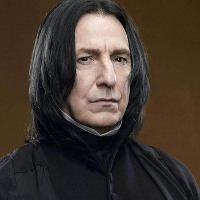

Severus Snape Personality Statistics
Statistics for the character of Severus Snape from Harry Potter, courtesy of the Open-Source Psychometrics Project. Open-Source Psychometrics
Full Personality Trait List
| Personality Traits | Average Rating | Rank |
|---|---|---|
| serious (not playful) | 95.2 | 2 |
| bookish (not sporty) | 94.4 | 9 |
| guarded (not open) | 93.7 | 5 |
| sorrowful (not cheery) | 93.4 | 1 |
| self-disciplined (not disorganized) | 93.3 | 23 |
| private (not gregarious) | 92.5 | 4 |
| reserved (not chatty) | 92.2 | 7 |
| deliberate (not spontaneous) | 90.9 | 17 |
| strict (not lenient) | 91.5 | 22 |
| introvert (not extrovert) | 88.7 | 2 |
| high IQ (not low IQ) | 89.4 | 80 |
| diligent (not lazy) | 89.1 | 127 |
| sad (not happy) | 89.1 | 4 |
| complicated (not simple) | 88.1 | 12 |
| tense (not relaxed) | 88.9 | 22 |
| nerd (not jock) | 88.9 | 56 |
| resourceful (not helpless) | 88.4 | 82 |
| scheduled (not spontaneous) | 87.9 | 35 |
| intellectual (not physical) | 87.2 | 55 |
| night owl (not morning lark) | 86.2 | 32 |
| pessimistic (not optimistic) | 85.9 | 13 |
| mysterious (not unambiguous) | 86.7 | 10 |
| workaholic (not slacker) | 86.6 | 104 |
| stoic (not expressive) | 86.4 | 14 |
| coordinated (not clumsy) | 86.2 | 81 |
| cold (not warm) | 85 | 45 |
| works hard (not plays hard) | 85.9 | 52 |
| angry (not good-humored) | 85.9 | 23 |
| competent (not incompetent) | 85.1 | 141 |
| humorless (not funny) | 83.8 | 19 |
| confidential (not gossiping) | 83.2 | 95 |
| driven (not unambitious) | 83.1 | 213 |
| genius (not dunce) | 83 | 79 |
| quarrelsome (not warm) | 84 | 67 |
| arcane (not mainstream) | 83.8 | 26 |
| rigid (not flexible) | 82.5 | 46 |
| authoritarian (not democratic) | 82.2 | 65 |
| scientific (not artistic) | 82 | 63 |
| bitter (not sweet) | 82.8 | 61 |
| shy (not playful) | 81.1 | 6 |
| historical (not modern) | 81.1 | 36 |
| bossy (not meek) | 81.8 | 153 |
| quiet (not loud) | 81.6 | 44 |
| unlucky (not fortunate) | 81.4 | 22 |
| biased (not impartial) | 81.1 | 78 |
| weird (not normal) | 80 | 78 |
| suspicious (not trusting) | 79.7 | 119 |
| utilitarian (not decorative) | 80.6 | 57 |
| insulting (not complimentary) | 79.5 | 67 |
| awkward (not charming) | 79.2 | 31 |
| child free (not pronatalist) | 79.1 | 85 |
| hoarder (not unprepared) | 79 | 27 |
| serious (not bold) | 79.9 | 20 |
| judgemental (not accepting) | 79.7 | 85 |
| sober (not indulgent) | 78.6 | 37 |
| purple (not orange) | 78.4 | 17 |
| skeptical (not spiritual) | 78.3 | 123 |
| cautious (not impulsive) | 78 | 59 |
| master (not apprentice) | 78 | 180 |
| depressed (not bright) | 78.8 | 28 |
| practical (not imaginative) | 77.8 | 100 |
| rational (not whimsical) | 78.5 | 109 |
| orderly (not chaotic) | 78.4 | 101 |
| eloquent (not unpolished) | 78.4 | 132 |
| hard (not soft) | 77.7 | 102 |
| conspiracist (not sheeple) | 76.6 | 98 |
| decisive (not hesitant) | 76.5 | 195 |
| extreme (not moderate) | 75.9 | 167 |
| cryptic (not straightforward) | 75.8 | 22 |
| specialist (not generalist) | 75.8 | 57 |
| worldly (not innocent) | 75.5 | 183 |
| armoured (not vulnerable) | 75.3 | 150 |
| tall (not short) | 76 | 108 |
| methodical (not astonishing) | 75.8 | 102 |
| close-minded (not open-minded) | 74.7 | 73 |
| arrogant (not humble) | 75.3 | 158 |
| jealous (not compersive) | 75.1 | 92 |
| deviant (not average) | 74.1 | 156 |
| stick-in-the-mud (not adventurous) | 73.4 | 64 |
| neat (not messy) | 74.4 | 185 |
| competitive (not cooperative) | 74.2 | 193 |
| frugal (not lavish) | 73.5 | 126 |
| edgy (not politically correct) | 72.2 | 181 |
| suspicious (not awkward) | 72 | 186 |
| sarcastic (not genuine) | 72.9 | 110 |
| outsider (not insider) | 71.7 | 119 |
| atheist (not theist) | 71.5 | 132 |
| old (not young) | 71.4 | 122 |
| assertive (not passive) | 72.2 | 279 |
| vengeful (not forgiving) | 71.1 | 156 |
| rude (not respectful) | 72 | 108 |
| moody (not stable) | 72 | 185 |
| obsessed (not aloof) | 70.8 | 138 |
| highbrow (not lowbrow) | 70.2 | 173 |
| wise (not foolish) | 71 | 151 |
| refined (not rugged) | 70.5 | 193 |
| ferocious (not pacifist) | 70.5 | 214 |
| permanent (not transient) | 70.4 | 121 |
| precise (not vague) | 69.3 | 208 |
| hard (not soft) | 69.8 | 177 |
| uncreative (not open to new experinces) | 68.7 | 63 |
| political (not nonpolitical) | 69.3 | 133 |
| street-smart (not sheltered) | 68.2 | 252 |
| mature (not juvenile) | 68.2 | 208 |
| loyal (not traitorous) | 68.9 | 377 |
| repulsive (not attractive) | 67.6 | 82 |
| extraordinary (not mundane) | 67.4 | 256 |
| devout (not heathen) | 68 | 168 |
| feisty (not gracious) | 68 | 281 |
| individualist (not communal) | 67.7 | 188 |
| interesting (not tiresome) | 66.6 | 240 |
| active (not slothful) | 67.3 | 378 |
| monochrome (not multicolored) | 66.3 | 124 |
| masculine (not feminine) | 66.9 | 270 |
| down2earth (not head@clouds) | 66.7 | 202 |
| straight (not queer) | 66.7 | 410 |
| libertarian (not socialist) | 66.6 | 138 |
| independent (not codependent) | 66.6 | 252 |
| mighty (not puny) | 66.4 | 319 |
| reasoned (not instinctual) | 66.2 | 122 |
| dominant (not submissive) | 65.7 | 331 |
| first-mate (not captain) | 64.7 | 236 |
| cruel (not kind) | 65.4 | 108 |
| empirical (not theoretical) | 65.3 | 154 |
| sensible (not ludicrous) | 64.3 | 259 |
| backdoor (not official) | 64.3 | 252 |
| poisonous (not nurturing) | 65 | 147 |
| direct (not roundabout) | 64.9 | 303 |
| soulful (not soulless) | 63.9 | 378 |
| luddite (not technophile) | 64.4 | 191 |
| builder (not explorer) | 62.7 | 192 |
| spicy (not mild) | 63.5 | 286 |
| work-first (not family-first) | 62.3 | 262 |
| modest (not flamboyant) | 63.1 | 240 |
| human (not animalistic) | 62.7 | 361 |
| enslaved (not emancipated) | 62.4 | 81 |
| provincial (not cosmopolitan) | 61.4 | 196 |
| civilized (not barbaric) | 61.3 | 357 |
| classical (not avant-garde) | 62.3 | 233 |
| mathematical (not literary) | 62.1 | 147 |
| rough (not smooth) | 60.5 | 190 |
| bold (not shy) | 60.4 | 490 |
| resistant (not resigned) | 60.4 | 393 |
| proper (not scandalous) | 60.3 | 240 |
| creepy (not disarming) | 61.3 | 109 |
| manicured (not scruffy) | 60.1 | 356 |
| realist (not idealist) | 60 | 219 |
| kinky (not vanilla) | 60.6 | 224 |
| sickly (not healthy) | 60.2 | 94 |
| no-nonsense (not dramatic) | 59.2 | 242 |
| prestigious (not disreputable) | 60 | 322 |
| cunning (not honorable) | 59.9 | 195 |
| ivory-tower (not blue-collar) | 58.5 | 254 |
| debased (not pure) | 59.3 | 228 |
| focused on the future (not focused on the present) | 58.1 | 164 |
| scholarly (not crafty) | 59.1 | 144 |
| demonic (not angelic) | 58 | 189 |
| ugly (not beautiful) | 57.8 | 110 |
| chaste (not lustful) | 57.6 | 200 |
| slovenly (not stylish) | 58.6 | 150 |
| beta (not alpha) | 57.6 | 192 |
| gendered (not androgynous) | 57.5 | 543 |
| hypocritical (not equitable) | 57.3 | 196 |
| low-tech (not high-tech) | 56.9 | 297 |
| uninspiring (not charismatic) | 56.9 | 97 |
| traditional (not unorthodox) | 57.9 | 220 |
| inspiring (not cringeworthy) | 57.5 | 298 |
| repetitive (not varied) | 57.2 | 335 |
| industrial (not domestic) | 56 | 297 |
| mischievous (not well behaved) | 56.9 | 337 |
| hurried (not leisurely) | 55.8 | 280 |
| calm (not anxious) | 56.7 | 228 |
| thin (not thick) | 56.6 | 331 |
| heroic (not villainous) | 56.5 | 421 |
| bourgeoisie (not proletariat) | 55.5 | 257 |
| fast (not slow) | 56.3 | 390 |
| logical (not emotional) | 54.6 | 237 |
| insecure (not confident) | 54 | 151 |
| nihilist (not existentialist) | 54.8 | 164 |
| tasteful (not lewd) | 53.7 | 385 |
| apathetic (not curious) | 53.6 | 114 |
| real (not philosophical) | 53.4 | 427 |
| impatient (not patient) | 53.3 | 365 |
| vain (not demure) | 54.2 | 311 |
| remote (not involved) | 54.1 | 121 |
| tame (not wild) | 53.1 | 231 |
| subjective (not objective) | 53 | 338 |
| literal (not metaphorical) | 52.9 | 422 |
| poor (not rich) | 52.7 | 259 |
| hipster (not basic) | 53.6 | 180 |
| self-conscious (not self-assured) | 53.5 | 137 |
| rebellious (not obedient) | 52.5 | 403 |
| brave (not careful) | 53.3 | 396 |
| outlaw (not sheriff) | 53.2 | 302 |
| 'left-brained' (not 'right-brained') | 52.2 | 220 |
| trusting (not charming) | 51.8 | 242 |
| conventional (not creative) | 50.6 | 296 |
| selfish (not altruistic) | 51.2 | 289 |
| neurotypical (not autistic) | 50.1 | 541 |
| thick-skinned (not sensitive) | 51.1 | 360 |
Top Five Most and Least Similar Characters
| Most Similar Characters | Least Similar Characters |
|---|---|
| 1. Toby Ziegler(0.804) | 1. Karen Smith(-0.677) |
| 2. Mycroft Holmes(0.78) | 2. Midge Pinciotti(-0.665) |
| 3. Vicious(0.766) | 3. Joey Tribbiani(-0.654) |
| 4. Ash(0.755) | 4. Pumbaa(-0.651) |
| 5. Darth Vader(0.741) | 5. Merry Brandybuck(-0.639) |
Full Personality Match List
| Full Match List | Universe | % Match |
|---|---|---|
| 1. Severus Snape | Harry Potter | 100% |
| 2. Toby Ziegler | The West Wing | 97% |
| 3. Odo | Star Trek Deep Space Nine | 94% |
| 4. Mr. Darcy | Pride and Prejudice | 91% |
| 5. Sheldon Cooper | The Big Bang Theory | 91% |
| 6. Dexter Morgan | Dexter | 91% |
| 7. Mycroft Holmes | Sherlock | 91% |
| 8. Raymond Holt | Brooklyn Nine-Nine | 91% |
| 9. Dwight Schrute | The Office | 90% |
| 10. John Munch | Law & Order SVU | 90% |
| 11. Ash | Alien | 90% |
| 12. Angela Martin | The Office | 89% |
| 13. Cristina Yang | Grey's Anatomy | 89% |
| 14. Gus Fring | Breaking Bad | 89% |
| 15. Miranda Hobbes | Sex and the City | 89% |
| 16. Rupert Giles | Buffy the Vampire Slayer | 89% |
| 17. Jasper Hale | Twilight | 89% |
| 18. Ross Geller | Friends | 88% |
| 19. Walter White | Breaking Bad | 88% |
| 20. Benjamin Linus | LOST | 87% |
| 21. Nick Fury | Marvel Cinematic Universe | 87% |
| 22. The Operative | Firefly + Serenity | 87% |
| 23. Walter Skinner | The X-Files | 87% |
| 24. Edward Cullen | Twilight | 87% |
| 25. Marty Byrde | Ozark | 87% |
| 26. Tywin Lannister | Game of Thrones | 86% |
| 27. Filius Flitwick | Harry Potter | 86% |
| 28. Carol Peletier | The Walking Dead | 86% |
| 29. Harry Morgan | Dexter | 86% |
| 30. Thomas Matthews | Dexter | 86% |
| 31. Cedric Daniels | The Wire | 86% |
| 32. Leroy Jethro Gibbs | NCIS | 86% |
| 33. Varys | Game of Thrones | 85% |
| 34. Dr. Strange | Marvel Cinematic Universe | 85% |
| 35. Miranda Bailey | Grey's Anatomy | 85% |
| 36. Lane Pryce | Mad Men | 85% |
| 37. Peter Gregory | Silicon Valley | 85% |
| 38. Agent Smith | The Matrix | 85% |
| 39. Red Reznikov | Orange is the New Black | 85% |
| 40. Brandon Stark | Game of Thrones | 84% |
| 41. Hermione Granger | Harry Potter | 84% |
| 42. Leo McGarry | The West Wing | 84% |
| 43. Zuko | Avatar The Last Airbender | 84% |
| 44. Jin-Soo Kwon | LOST | 84% |
| 45. Red Forman | That 70's Show | 84% |
| 46. Preston Burke | Grey's Anatomy | 84% |
| 47. Mike Ehrmantraut | Breaking Bad | 84% |
| 48. Sarah O'Brien | Downton Abbey | 84% |
| 49. Amy Farrah Fowler | The Big Bang Theory | 84% |
| 50. Bernard Lowe | Westworld | 84% |
| 51. Theresa Cullen | Westworld | 84% |
| 52. Peggy Olson | Mad Men | 84% |
| 53. Vicious | Cowboy Bebop | 84% |
| 54. Mr. Saito | Inception | 84% |
| 55. Dagny Taggart | Atlas Shrugged | 84% |
| 56. Henry Rearden | Atlas Shrugged | 84% |
| 57. Stannis Baratheon | Game of Thrones | 83% |
| 58. Minerva McGonagall | Harry Potter | 83% |
| 59. Mr. Burns | The Simpsons | 83% |
| 60. Principal Skinner | The Simpsons | 83% |
| 61. Darth Vader | Star Wars | 83% |
| 62. Rust Cohle | True Detective | 83% |
| 63. Spiros 'Vondas' Vondopoulos | The Wire | 83% |
| 64. William Adama | Battlestar Galactica | 83% |
| 65. James Norrington | Pirates of the Caribbean | 83% |
| 66. Mr. Potato Head | Toy Story | 83% |
| 67. Peter | The Room | 83% |
| 68. Alastor Moody | Harry Potter | 82% |
| 69. Gamora | Marvel Cinematic Universe | 82% |
| 70. Charlie Carson | Downton Abbey | 82% |
| 71. Simon Tam | Firefly + Serenity | 82% |
| 72. The Narrator | Fight Club | 82% |
| 73. Ray Arnold | Jurassic Park | 82% |
| 74. Donald Cragen | Law & Order SVU | 82% |
| 75. Dana Scully | The X-Files | 82% |
| 76. Betsy Heron | Mean Girls | 82% |
| 77. Randall Pearson | This Is Us | 82% |
| 78. Brienne of Tarth | Game of Thrones | 81% |
| 79. Sayid Jarrah | LOST | 81% |
| 80. John Locke | LOST | 81% |
| 81. Thanos | Marvel Cinematic Universe | 81% |
| 82. Lisa Simpson | The Simpsons | 81% |
| 83. John Bates | Downton Abbey | 81% |
| 84. Ron Swanson | Parks and Recreation | 81% |
| 85. James Doakes | Dexter | 81% |
| 86. Felix Gaeta | Battlestar Galactica | 81% |
| 87. Dr. Alan Grant | Jurassic Park | 81% |
| 88. Sherlock Holmes | Sherlock | 81% |
| 89. Bertram Gilfoyle | Silicon Valley | 81% |
| 90. Ellen Ripley | Alien | 81% |
| 91. Ellis Wyatt | Atlas Shrugged | 81% |
| 92. Michael Bluth | Arrested Development | 81% |
| 93. Jonah Byrde | Ozark | 81% |
| 94. Lady Catherine de Bourgh | Pride and Prejudice | 80% |
| 95. Juliet Burke | LOST | 80% |
| 96. Worf | Star Trek Deep Space Nine | 80% |
| 97. Skyler White | Breaking Bad | 80% |
| 98. Russell 'Stringer' Bell | The Wire | 80% |
| 99. Norman Wilson | The Wire | 80% |
| 100. Eleanor Sung-Young | Crazy Rich Asians | 80% |
| 101. Richard Hendricks | Silicon Valley | 80% |
| 102. Teal'c | Stargate SG-1 | 80% |
| 103. Ruth Langmore | Ozark | 80% |
| 104. Frank Burns | M*A*S*H | 80% |
| 105. Sansa Stark | Game of Thrones | 79% |
| 106. Remus Lupin | Harry Potter | 79% |
| 107. Dukat | Star Trek Deep Space Nine | 79% |
| 108. Bruce Banner | Marvel Cinematic Universe | 79% |
| 109. Violet Crawley, Dowager Countess | Downton Abbey | 79% |
| 110. Leslie Winkle | The Big Bang Theory | 79% |
| 111. Katniss Everdeen | The Hunger Games | 79% |
| 112. Coriolanus Snow | The Hunger Games | 79% |
| 113. William Rawls | The Wire | 79% |
| 114. Maurice Levy | The Wire | 79% |
| 115. Elsie Hughes | Westworld | 79% |
| 116. Laura Roslin | Battlestar Galactica | 79% |
| 117. Saul Tigh | Battlestar Galactica | 79% |
| 118. Trinity | The Matrix | 79% |
| 119. Dom Cobb | Inception | 79% |
| 120. Robert Fischer | Inception | 79% |
| 121. John Galt | Atlas Shrugged | 79% |
| 122. Lord Voldemort | Harry Potter | 78% |
| 123. C-3PO | Star Wars | 78% |
| 124. Rick Grimes | The Walking Dead | 78% |
| 125. Chris Partlow | The Wire | 78% |
| 126. James Gordon | The Dark Knight | 78% |
| 127. Angel | Buffy the Vampire Slayer | 78% |
| 128. Rosa Diaz | Brooklyn Nine-Nine | 78% |
| 129. Amy Santiago | Brooklyn Nine-Nine | 78% |
| 130. Jules Winnfield | Pulp Fiction | 78% |
| 131. Rosalie Hale | Twilight | 78% |
| 132. Helen Seinfeld | Seinfeld | 78% |
| 133. Judith Harper-Melnick | Two and Half Men | 78% |
| 134. Monica Geller | Friends | 77% |
| 135. Stanley Hudson | The Office | 77% |
| 136. Desmond Hume | LOST | 77% |
| 137. Richard Webber | Grey's Anatomy | 77% |
| 138. Gandalf | Lord of the Rings | 77% |
| 139. Kima Greggs | The Wire | 77% |
| 140. Harvey Dent | The Dark Knight | 77% |
| 141. Rachel Menken | Mad Men | 77% |
| 142. Morpheus | The Matrix | 77% |
| 143. the Alien | Alien | 77% |
| 144. Wendy Byrde | Ozark | 77% |
| 145. Sandor Clegane | Game of Thrones | 76% |
| 146. Catelyn Stark | Game of Thrones | 76% |
| 147. Petunia Dursley | Harry Potter | 76% |
| 148. Mr. William Collins | Pride and Prejudice | 76% |
| 149. Firelord Ozai | Avatar The Last Airbender | 76% |
| 150. Man in Black | Westworld | 76% |
| 151. Lau | The Dark Knight | 76% |
| 152. Scar | The Lion King | 76% |
| 153. Henry Francis | Mad Men | 76% |
| 154. Jared Dunn | Silicon Valley | 76% |
| 155. Evan | Superbad | 76% |
| 156. Margaret 'Hot Lips' Houlihan | M*A*S*H | 76% |
| 157. Dolores Umbridge | Harry Potter | 75% |
| 158. Elizabeth Bennet | Pride and Prejudice | 75% |
| 159. Winn Adami | Star Trek Deep Space Nine | 75% |
| 160. Black Widow | Marvel Cinematic Universe | 75% |
| 161. Captain Marvel | Marvel Cinematic Universe | 75% |
| 162. Obi-Wan Kenobi | Star Wars | 75% |
| 163. Maria LaGuerta | Dexter | 75% |
| 164. Dolores Abernathy | Westworld | 75% |
| 165. Rachel Dawes | The Dark Knight | 75% |
| 166. Anthony Garcia | The Dark Knight | 75% |
| 167. Dale Cooper | Twin Peaks | 75% |
| 168. George S. Hammond | Stargate SG-1 | 75% |
| 169. Sam Healy | Orange is the New Black | 75% |
| 170. Morty Seinfeld | Seinfeld | 75% |
| 171. Arya Stark | Game of Thrones | 74% |
| 172. Asha Greyjoy | Game of Thrones | 74% |
| 173. Peggy Carter | Marvel Cinematic Universe | 74% |
| 174. Meredith Grey | Grey's Anatomy | 74% |
| 175. Waylon Smithers | The Simpsons | 74% |
| 176. Lester Freamon | The Wire | 74% |
| 177. Ervin Burrell | The Wire | 74% |
| 178. Akecheta | Westworld | 74% |
| 179. Bruce Wayne | The Dark Knight | 74% |
| 180. Rick Blaine | Casablanca | 74% |
| 181. Josie Packard | Twin Peaks | 74% |
| 182. Daniel Jackson | Stargate SG-1 | 74% |
| 183. Ms. Sharon Norbury | Mean Girls | 74% |
| 184. Roy Petty | Ozark | 74% |
| 185. Jorah Mormont | Game of Thrones | 73% |
| 186. Davos Seaworth | Game of Thrones | 73% |
| 187. Cornelius Fudge | Harry Potter | 73% |
| 188. C. J. Cregg | The West Wing | 73% |
| 189. Azula | Avatar The Last Airbender | 73% |
| 190. Jack Shephard | LOST | 73% |
| 191. Kira Nerys | Star Trek Deep Space Nine | 73% |
| 192. Bernadette Rostenkowski | The Big Bang Theory | 73% |
| 193. River Tam | Firefly + Serenity | 73% |
| 194. Robert Ford | Westworld | 73% |
| 195. Victor Laszlo | Casablanca | 73% |
| 196. Dr. John Watson | Sherlock | 73% |
| 197. Olivia Benson | Law & Order SVU | 73% |
| 198. Melinda Warner | Law & Order SVU | 73% |
| 199. Neo | The Matrix | 73% |
| 200. Alex Vause | Orange is the New Black | 73% |
| 201. George Costanza | Seinfeld | 73% |
| 202. Alan Harper | Two and Half Men | 73% |
| 203. Benjamin Sisko | Star Trek Deep Space Nine | 72% |
| 204. Elim Garak | Star Trek Deep Space Nine | 72% |
| 205. Edna Krabappel | The Simpsons | 72% |
| 206. Princess Leia | Star Wars | 72% |
| 207. Lady Edith Crawley | Downton Abbey | 72% |
| 208. Lady Mary Crawley | Downton Abbey | 72% |
| 209. Daryl Dixon | The Walking Dead | 72% |
| 210. Rhonda Pearlman | The Wire | 72% |
| 211. Frank Sobotka | The Wire | 72% |
| 212. Alfred Pennyworth | The Dark Knight | 72% |
| 213. Timothy McGee | NCIS | 72% |
| 214. Jon Snow | Game of Thrones | 71% |
| 215. Olenna Tyrell | Game of Thrones | 71% |
| 216. Josh Lyman | The West Wing | 71% |
| 217. Abbey Bartlet | The West Wing | 71% |
| 218. Sun-Hwa Kwon | LOST | 71% |
| 219. Aragorn | Lord of the Rings | 71% |
| 220. Zoe Washburne | Firefly + Serenity | 71% |
| 221. Abed Nadir | Community | 71% |
| 222. Maeve Millay | Westworld | 71% |
| 223. Charlotte Hale | Westworld | 71% |
| 224. Anastasia Dualla | Battlestar Galactica | 71% |
| 225. Elliot Stabler | Law & Order SVU | 71% |
| 226. Catherine Martell | Twin Peaks | 71% |
| 227. Jet Black | Cowboy Bebop | 71% |
| 228. Samantha Carter | Stargate SG-1 | 71% |
| 229. Ariadne | Inception | 71% |
| 230. Cersei Lannister | Game of Thrones | 70% |
| 231. Draco Malfoy | Harry Potter | 70% |
| 232. Jan Levinson | The Office | 70% |
| 233. Josiah Bartlet | The West Wing | 70% |
| 234. Dale Horvath | The Walking Dead | 70% |
| 235. Ashley Stubbs | Westworld | 70% |
| 236. Lucius Fox | The Dark Knight | 70% |
| 237. Pete Campbell | Mad Men | 70% |
| 238. Dinesh Chugtai | Silicon Valley | 70% |
| 239. Julia | Cowboy Bebop | 70% |
| 240. Darlene Snell | Ozark | 70% |
| 241. Petyr Baelish | Game of Thrones | 69% |
| 242. Black Panther | Marvel Cinematic Universe | 69% |
| 243. Legolas | Lord of the Rings | 69% |
| 244. Thomas Barrow | Downton Abbey | 69% |
| 245. Annie Edison | Community | 69% |
| 246. Michael Lee | The Wire | 69% |
| 247. Sharon 'Boomer' Valerii | Battlestar Galactica | 69% |
| 248. Marsellus Wallace | Pulp Fiction | 69% |
| 249. Jacob Snell | Ozark | 69% |
| 250. Eddard Stark | Game of Thrones | 68% |
| 251. Nog | Star Trek Deep Space Nine | 68% |
| 252. Captain America | Marvel Cinematic Universe | 68% |
| 253. Robert Crawley, 7th Earl of Grantham | Downton Abbey | 68% |
| 254. Stuart Bloom | The Big Bang Theory | 68% |
| 255. Roland 'Prez' Pryzbylewski | The Wire | 68% |
| 256. Friar Laurence | Romeo and Juliet | 68% |
| 257. Matt Saracen | Friday Night Lights | 68% |
| 258. Landry Clarke | Friday Night Lights | 68% |
| 259. Donald Mallard | NCIS | 68% |
| 260. Toph Beifong | Avatar The Last Airbender | 67% |
| 261. Michael Dawson | LOST | 67% |
| 262. Hank Schrader | Breaking Bad | 67% |
| 263. Elsie Carson | Downton Abbey | 67% |
| 264. Leonard Hofstadter | The Big Bang Theory | 67% |
| 265. Carl Grimes | The Walking Dead | 67% |
| 266. Omar Little | The Wire | 67% |
| 267. Avon Barksdale | The Wire | 67% |
| 268. Elizabeth Swann | Pirates of the Caribbean | 67% |
| 269. Donna Hayward | Twin Peaks | 67% |
| 270. Nick Carraway | The Great Gatsby | 67% |
| 271. Janis Ian | Mean Girls | 67% |
| 272. Bella Swan | Twilight | 67% |
| 273. Charlie Swan | Twilight | 67% |
| 274. Carlisle Cullen | Twilight | 67% |
| 275. Wyatt Langmore | Ozark | 67% |
| 276. Melisandre | Game of Thrones | 66% |
| 277. Moe Szyslak | The Simpsons | 66% |
| 278. Lee 'Apollo' Adama | Battlestar Galactica | 66% |
| 279. D.I. Greg Lestrade | Sherlock | 66% |
| 280. Monica Hall | Silicon Valley | 66% |
| 281. Arthur | Inception | 66% |
| 282. Woody | Toy Story | 66% |
| 283. Daenerys Targaryen | Game of Thrones | 65% |
| 284. Moaning Myrtle | Harry Potter | 65% |
| 285. Joey Lucas | The West Wing | 65% |
| 286. Milhouse Van Houten | The Simpsons | 65% |
| 287. Frodo Baggins | Lord of the Rings | 65% |
| 288. Andrea | The Walking Dead | 65% |
| 289. Debra Morgan | Dexter | 65% |
| 290. Felix Lutz | Westworld | 65% |
| 291. Mufasa | The Lion King | 65% |
| 292. Galen Tyrol | Battlestar Galactica | 65% |
| 293. Molly Hooper | Sherlock | 65% |
| 294. Leland Palmer | Twin Peaks | 65% |
| 295. Janet Fraiser | Stargate SG-1 | 65% |
| 296. Lambert | Alien | 65% |
| 297. Eric Taylor | Friday Night Lights | 65% |
| 298. George Michael Bluth | Arrested Development | 65% |
| 299. Samwell Tarly | Game of Thrones | 64% |
| 300. Eric Forman | That 70's Show | 64% |
| 301. April Ludgate | Parks and Recreation | 64% |
| 302. Mr. Big | Sex and the City | 64% |
| 303. Jian-Yang | Silicon Valley | 64% |
| 304. Ed Hurley | Twin Peaks | 64% |
| 305. The Nurse | Romeo and Juliet | 64% |
| 306. Benvolio | Romeo and Juliet | 64% |
| 307. Mal Cobb | Inception | 64% |
| 308. Dallas | Alien | 64% |
| 309. Butch Coolidge | Pulp Fiction | 64% |
| 310. Lucille Bluth | Arrested Development | 64% |
| 311. Albus Dumbledore | Harry Potter | 63% |
| 312. Charlie Young | The West Wing | 63% |
| 313. Katara | Avatar The Last Airbender | 63% |
| 314. Boromir | Lord of the Rings | 63% |
| 315. Derrial Book | Firefly + Serenity | 63% |
| 316. Gale Hawthorne | The Hunger Games | 63% |
| 317. Dennis 'Cutty' Wise | The Wire | 63% |
| 318. Billy Keikeya | Battlestar Galactica | 63% |
| 319. Willow Rosenberg | Buffy the Vampire Slayer | 63% |
| 320. Dr. Ellie Sattler | Jurassic Park | 63% |
| 321. Gavin Belson | Silicon Valley | 63% |
| 322. Odafin Tutuola | Law & Order SVU | 63% |
| 323. George Bluth, Sr. | Arrested Development | 63% |
| 324. Viktor Krum | Harry Potter | 62% |
| 325. Julian Bashir | Star Trek Deep Space Nine | 62% |
| 326. Addison Montgomery | Grey's Anatomy | 62% |
| 327. Gollum | Lord of the Rings | 62% |
| 328. Mary Cooper | The Big Bang Theory | 62% |
| 329. Benjamin Horne | Twin Peaks | 62% |
| 330. Tom Buchanan | The Great Gatsby | 62% |
| 331. Cady Heron | Mean Girls | 62% |
| 332. Jimmy Palmer | NCIS | 62% |
| 333. Joffrey Baratheon | Game of Thrones | 61% |
| 334. Quark | Star Trek Deep Space Nine | 61% |
| 335. Hawkeye | Marvel Cinematic Universe | 61% |
| 336. Shane Walsh | The Walking Dead | 61% |
| 337. Tommy Carcetti | The Wire | 61% |
| 338. Harry Crane | Mad Men | 61% |
| 339. Bert Cooper | Mad Men | 61% |
| 340. Sheriff Truman | Twin Peaks | 61% |
| 341. Sid Phillips | Toy Story | 61% |
| 342. Tyrion Lannister | Game of Thrones | 60% |
| 343. Cho Chang | Harry Potter | 60% |
| 344. Kate Austen | LOST | 60% |
| 345. Gimli | Lord of the Rings | 60% |
| 346. Beryl Patmore | Downton Abbey | 60% |
| 347. Maggie Hart | True Detective | 60% |
| 348. Haymitch Abernathy | The Hunger Games | 60% |
| 349. Karl 'Helo' Agathon | Battlestar Galactica | 60% |
| 350. Don Draper | Mad Men | 60% |
| 351. Fox Mulder | The X-Files | 60% |
| 352. Buzz Lightyear | Toy Story | 60% |
| 353. Piper Chapman | Orange is the New Black | 60% |
| 354. Evelyn Harper | Two and Half Men | 60% |
| 355. Beth Pearson | This Is Us | 60% |
| 356. Rachel Garrison | Ozark | 60% |
| 357. Theon Greyjoy | Game of Thrones | 59% |
| 358. Marie Schrader | Breaking Bad | 59% |
| 359. Mark Brendanawicz | Parks and Recreation | 59% |
| 360. Britta Perry | Community | 59% |
| 361. Beatrice 'Beadie' Russell | The Wire | 59% |
| 362. Dr. Ian Malcolm | Jurassic Park | 59% |
| 363. Hector Barbossa | Pirates of the Caribbean | 59% |
| 364. Will Turner | Pirates of the Caribbean | 59% |
| 365. Cypher | The Matrix | 59% |
| 366. Jerry Seinfeld | Seinfeld | 59% |
| 367. Charlotte Byrde | Ozark | 59% |
| 368. Miles O'Brien | Star Trek Deep Space Nine | 58% |
| 369. Tony Stark | Marvel Cinematic Universe | 58% |
| 370. Donna Pinciotti | That 70's Show | 58% |
| 371. Leslie Knope | Parks and Recreation | 58% |
| 372. Ian Duncan | Community | 58% |
| 373. Merle Dixon | The Walking Dead | 58% |
| 374. D'Angelo Barksdale | The Wire | 58% |
| 375. Clarence Royce | The Wire | 58% |
| 376. Gaius Baltar | Battlestar Galactica | 58% |
| 377. Betty Draper | Mad Men | 58% |
| 378. Joan Holloway | Mad Men | 58% |
| 379. Jo March | Little Women | 58% |
| 380. Jason Street | Friday Night Lights | 58% |
| 381. Harry Potter | Harry Potter | 57% |
| 382. Ginny Weasley | Harry Potter | 57% |
| 383. Glenn Rhee | The Walking Dead | 57% |
| 384. Buffy Summers | Buffy the Vampire Slayer | 57% |
| 385. Ygritte | Game of Thrones | 56% |
| 386. Dobby | Harry Potter | 56% |
| 387. Robert California | The Office | 56% |
| 388. Malcolm Reynolds | Firefly + Serenity | 56% |
| 389. Marty Hart | True Detective | 56% |
| 390. Dennis Nedry | Jurassic Park | 56% |
| 391. Prince John | Robin Hood | 56% |
| 392. Rita Skeeter | Harry Potter | 55% |
| 393. Sam Seaborn | The West Wing | 55% |
| 394. Pierce Hawthorne | Community | 55% |
| 395. Bunk Moreland | The Wire | 55% |
| 396. Nala | The Lion King | 55% |
| 397. Number Six | Battlestar Galactica | 55% |
| 398. Rachel Chu | Crazy Rich Asians | 55% |
| 399. Jack O'Neill | Stargate SG-1 | 55% |
| 400. Francisco d'Anconia | Atlas Shrugged | 55% |
| 401. Kate Pearson | This Is Us | 55% |
| 402. Horace Slughorn | Harry Potter | 54% |
| 403. Bellatrix Lestrange | Harry Potter | 54% |
| 404. Sirius Black | Harry Potter | 54% |
| 405. Chandler Bing | Friends | 54% |
| 406. Loki | Marvel Cinematic Universe | 54% |
| 407. Flynn White | Breaking Bad | 54% |
| 408. Vince Masuka | Dexter | 54% |
| 409. Nick Sobotka | The Wire | 54% |
| 410. Sheriff of Nottingham | Robin Hood | 54% |
| 411. Michelle | The Room | 54% |
| 412. Miguel Rivas | This Is Us | 54% |
| 413. Ryan Howard | The Office | 53% |
| 414. Steven Hyde | That 70's Show | 53% |
| 415. Alex Karev | Grey's Anatomy | 53% |
| 416. George O'Malley | Grey's Anatomy | 53% |
| 417. Nelson Muntz | The Simpsons | 53% |
| 418. Samwise Gamgee | Lord of the Rings | 53% |
| 419. Howard Wolowitz | The Big Bang Theory | 53% |
| 420. Jayne Cobb | Firefly + Serenity | 53% |
| 421. Ilsa Lund | Casablanca | 53% |
| 422. Elaine Benes | Seinfeld | 53% |
| 423. Berta | Two and Half Men | 53% |
| 424. Hakoda | Avatar The Last Airbender | 52% |
| 425. Apu Nahasapeemapetilon | The Simpsons | 52% |
| 426. Ned Flanders | The Simpsons | 52% |
| 427. Jeff Winger | Community | 52% |
| 428. Ben Chang | Community | 52% |
| 429. Charlotte York | Sex and the City | 52% |
| 430. Joshamee Gibbs | Pirates of the Caribbean | 52% |
| 431. James Hurley | Twin Peaks | 52% |
| 432. Regina George | Mean Girls | 52% |
| 433. Vincent Vega | Pulp Fiction | 52% |
| 434. Robb Stark | Game of Thrones | 51% |
| 435. Fleur Delacour | Harry Potter | 51% |
| 436. Marge Simpson | The Simpsons | 51% |
| 437. Anna Bates | Downton Abbey | 51% |
| 438. Raj Koothrappali | The Big Bang Theory | 51% |
| 439. Ann Perkins | Parks and Recreation | 51% |
| 440. Lori Grimes | The Walking Dead | 51% |
| 441. Preston 'Bodie' Broadus | The Wire | 51% |
| 442. The Joker | The Dark Knight | 51% |
| 443. Astrid Leong-Teo | Crazy Rich Asians | 51% |
| 444. Peeta Mellark | The Hunger Games | 50% |
| 445. Sal Maroni | The Dark Knight | 50% |
| 446. Marmee March | Little Women | 50% |
| 447. Johnny | The Room | 50% |
| 448. Jaime Lannister | Game of Thrones | 49% |
| 449. Margaery Tyrell | Game of Thrones | 49% |
| 450. Jadzia Dax | Star Trek Deep Space Nine | 49% |
| 451. Jimmy McGill | Breaking Bad | 49% |
| 452. Jimmy McNulty | The Wire | 49% |
| 453. Taystee Jefferson | Orange is the New Black | 49% |
| 454. Pennsatucky Doggett | Orange is the New Black | 49% |
| 455. Buster Bluth | Arrested Development | 49% |
| 456. Walter 'Radar' O'Reilly | M*A*S*H | 49% |
| 457. Inara Serra | Firefly + Serenity | 48% |
| 458. Kara 'Starbuck' Thrace | Battlestar Galactica | 48% |
| 459. Meg March | Little Women | 48% |
| 460. Crazy Eyes | Orange is the New Black | 48% |
| 461. Francis Mulcahy | M*A*S*H | 48% |
| 462. Luke Skywalker | Star Wars | 47% |
| 463. Tyler Durden | Fight Club | 47% |
| 464. The Oracle | The Matrix | 47% |
| 465. Ringo | Pulp Fiction | 47% |
| 466. Jacob Black | Twilight | 47% |
| 467. Molly Weasley | Harry Potter | 46% |
| 468. Shirley Bennett | Community | 46% |
| 469. Lee Sizemore | Westworld | 46% |
| 470. Cally Henderson | Battlestar Galactica | 46% |
| 471. Pete Martell | Twin Peaks | 46% |
| 472. Jordan Baker | The Great Gatsby | 46% |
| 473. Terry Jeffords | Brooklyn Nine-Nine | 46% |
| 474. Sophie | This Is Us | 46% |
| 475. Arthur Weasley | Harry Potter | 45% |
| 476. Rom | Star Trek Deep Space Nine | 45% |
| 477. Derek Shepherd | Grey's Anatomy | 45% |
| 478. Joey Quinn | Dexter | 45% |
| 479. Paul Kinsey | Mad Men | 45% |
| 480. Mrs. Hudson | Sherlock | 45% |
| 481. Faye Valentine | Cowboy Bebop | 45% |
| 482. Maeby Funke | Arrested Development | 45% |
| 483. Oscar Bluth | Arrested Development | 45% |
| 484. Benjamin 'Hawkeye' Pierce | M*A*S*H | 45% |
| 485. Mrs. Bennet | Pride and Prejudice | 44% |
| 486. William Mason | Downton Abbey | 44% |
| 487. Marla Singer | Fight Club | 44% |
| 488. Teddy Flood | Westworld | 44% |
| 489. Beth March | Little Women | 44% |
| 490. Nicky Nichols | Orange is the New Black | 44% |
| 491. Julie Taylor | Friday Night Lights | 44% |
| 492. Esme Cullen | Twilight | 44% |
| 493. Jane Bennet | Pride and Prejudice | 43% |
| 494. Krusty the Clown | The Simpsons | 43% |
| 495. Jane Margolis | Breaking Bad | 43% |
| 496. Salvatore Romano | Mad Men | 43% |
| 497. Audrey Horne | Twin Peaks | 43% |
| 498. Jay Gatsby | The Great Gatsby | 43% |
| 499. Alice Cullen | Twilight | 43% |
| 500. Rebecca Pearson | This Is Us | 43% |
| 501. William H. 'Shakespeare' Hill | This Is Us | 43% |
| 502. James 'Sawyer' Ford | LOST | 42% |
| 503. Ken Cosgrove | Mad Men | 42% |
| 504. John Hammond | Jurassic Park | 42% |
| 505. Bobby Briggs | Twin Peaks | 42% |
| 506. Seth | Superbad | 42% |
| 507. Friar Tuck | Robin Hood | 42% |
| 508. Amy March | Little Women | 42% |
| 509. James Taggart | Atlas Shrugged | 42% |
| 510. Charles Boyle | Brooklyn Nine-Nine | 42% |
| 511. Abby Sciuto | NCIS | 42% |
| 512. Bronn | Game of Thrones | 41% |
| 513. Donna Moss | The West Wing | 41% |
| 514. Iroh | Avatar The Last Airbender | 41% |
| 515. Timon | The Lion King | 41% |
| 516. Cordelia Chase | Buffy the Vampire Slayer | 41% |
| 517. Norma Jennings | Twin Peaks | 41% |
| 518. Fogell | McLovin | |
| 519. Bo Peep | Toy Story | 41% |
| 520. Tami Taylor | Friday Night Lights | 41% |
| 521. George Oscar 'Gob' Bluth | Arrested Development | 41% |
| 522. Meredith Palmer | The Office | 40% |
| 523. Phyllis Lapin | The Office | 40% |
| 524. Kitty Forman | That 70's Show | 40% |
| 525. Ellis Carver | The Wire | 40% |
| 526. Clay Davis | The Wire | 40% |
| 527. Samuel 'Longshot' Anders | Battlestar Galactica | 40% |
| 528. Roger Sterling | Mad Men | 40% |
| 529. Tim Riggins | Friday Night Lights | 40% |
| 530. Tyra Collette | Friday Night Lights | 40% |
| 531. Sokka | Avatar The Last Airbender | 39% |
| 532. Kasidy Yates | Star Trek Deep Space Nine | 39% |
| 533. Jesse Pinkman | Breaking Bad | 39% |
| 534. Cora Crawley, Countess of Grantham | Downton Abbey | 39% |
| 535. Daisy Mason | Downton Abbey | 39% |
| 536. Craig Pelton | Community | 39% |
| 537. Ziggy Sobotka | The Wire | 39% |
| 538. Nick Young | Crazy Rich Asians | 39% |
| 539. Pam Beesly | The Office | 38% |
| 540. Colin Khoo | Crazy Rich Asians | 38% |
| 541. Smash Williams | Friday Night Lights | 38% |
| 542. Tobias Funke | Arrested Development | 38% |
| 543. Nymphadora Tonks | Harry Potter | 37% |
| 544. Andy Bernard | The Office | 37% |
| 545. Thor | Marvel Cinematic Universe | 37% |
| 546. Effie Trinket | The Hunger Games | 37% |
| 547. Thomas 'Herc' Hauk | The Wire | 37% |
| 548. Mercutio | Romeo and Juliet | 37% |
| 549. Lisa | The Room | 37% |
| 550. Cosmo Kramer | Seinfeld | 37% |
| 551. Oberyn Martell | Game of Thrones | 36% |
| 552. Ron Weasley | Harry Potter | 36% |
| 553. Jim Halpert | The Office | 36% |
| 554. Jackie Burkhart | That 70's Show | 36% |
| 555. Maid Marian | Robin Hood | 36% |
| 556. Luna Lovegood | Harry Potter | 35% |
| 557. Jake Sisko | Star Trek Deep Space Nine | 35% |
| 558. Samantha Jones | Sex and the City | 35% |
| 559. Steve Brady | Sex and the City | 35% |
| 560. Reginald 'Bubbles' Cousins | The Wire | 35% |
| 561. Logan Delos | Westworld | 35% |
| 562. Ed | Cowboy Bebop | 35% |
| 563. Mia Wallace | Pulp Fiction | 35% |
| 564. Georgiana Darcy | Pride and Prejudice | 34% |
| 565. Shannon Rutherford | LOST | 34% |
| 566. Han Solo | Star Wars | 34% |
| 567. Rita Bennett | Dexter | 34% |
| 568. Erlich Bachman | Silicon Valley | 34% |
| 569. Spike Spiegel | Cowboy Bebop | 34% |
| 570. Damian Leigh | Mean Girls | 34% |
| 571. Lyla Garrity | Friday Night Lights | 34% |
| 572. Jack Sparrow | Pirates of the Caribbean | 33% |
| 573. Officer Slater | Superbad | 33% |
| 574. Jack Pearson | This Is Us | 33% |
| 575. Rubeus Hagrid | Harry Potter | 32% |
| 576. Xander Harris | Buffy the Vampire Slayer | 32% |
| 577. Juliet Capulet | Romeo and Juliet | 32% |
| 578. Claire Littleton | LOST | 31% |
| 579. Shelly Johnson | Twin Peaks | 31% |
| 580. Lucy Moran | Twin Peaks | 31% |
| 581. Jules | Superbad | 31% |
| 582. Robin Hood | Robin Hood | 31% |
| 583. Rex | Toy Story | 31% |
| 584. Emmett Cullen | Twilight | 31% |
| 585. Anthony DiNozzo | NCIS | 31% |
| 586. Barney Gumble | The Simpsons | 30% |
| 587. Hoban Washburne | Firefly + Serenity | 30% |
| 588. Clementine Pennyfeather | Westworld | 30% |
| 589. Stan Rizzo | Mad Men | 30% |
| 590. Romeo Montague | Romeo and Juliet | 30% |
| 591. Toby Damon | This Is Us | 30% |
| 592. Hugo 'Hurley' Reyes | LOST | 29% |
| 593. Kaylee Frye | Firefly + Serenity | 29% |
| 594. Carrie Bradshaw | Sex and the City | 29% |
| 595. Becca | Superbad | 29% |
| 596. Little John | Robin Hood | 29% |
| 597. Charlie Harper | Two and Half Men | 29% |
| 598. Lindsay Bluth Funke | Arrested Development | 29% |
| 599. Shae | Game of Thrones | 28% |
| 600. George Wickham | Pride and Prejudice | 28% |
| 601. Aang | Avatar The Last Airbender | 28% |
| 602. Lady Sybil Crawley | Downton Abbey | 28% |
| 603. Myrtle Wilson | The Great Gatsby | 28% |
| 604. Gretchen Wieners | Mean Girls | 28% |
| 605. Maxwell Klinger | M*A*S*H | 28% |
| 606. Phoebe Buffay | Friends | 27% |
| 607. Kevin Malone | The Office | 27% |
| 608. Kelly Erin Hannon | The Office | 27% |
| 609. Bart Simpson | The Simpsons | 27% |
| 610. George Weasley | Harry Potter | 26% |
| 611. Michael Scott | The Office | 26% |
| 612. Kelly Kapoor | The Office | 26% |
| 613. Charlie Pace | LOST | 26% |
| 614. Goh Peik Lin | Crazy Rich Asians | 26% |
| 615. Parker | Alien | 26% |
| 616. Charles Bingley | Pride and Prejudice | 25% |
| 617. Peter Jason Quill | Marvel Cinematic Universe | 25% |
| 618. Fez | That 70's Show | 25% |
| 619. Bob Pinciotti | That 70's Show | 25% |
| 620. Nelson Bighetti | Silicon Valley | 25% |
| 621. Theodore Laurence | Little Women | 25% |
| 622. Lorna Morello | Orange is the New Black | 25% |
| 623. Flaca Gonzales | Orange is the New Black | 25% |
| 624. Izzie Stevens | Grey's Anatomy | 24% |
| 625. Tom Haverford | Parks and Recreation | 24% |
| 626. Angel Batista | Dexter | 24% |
| 627. Mark | The Room | 24% |
| 628. Jake Harper | Two and Half Men | 24% |
| 629. Homer Simpson | The Simpsons | 23% |
| 630. Daisy Buchanan | The Great Gatsby | 23% |
| 631. Jake Peralta | Brooklyn Nine-Nine | 23% |
| 632. Rachel Green | Friends | 22% |
| 633. Denny | The Room | 22% |
| 634. Kevin Pearson | This Is Us | 22% |
| 635. Pumbaa | The Lion King | 20% |
| 636. Aaron Samuels | Mean Girls | 19% |
| 637. Ty Lee | Avatar The Last Airbender | 18% |
| 638. Pippin Took | Lord of the Rings | 18% |
| 639. Simba | The Lion King | 18% |
| 640. June George | Mean Girls | 18% |
| 641. Lydia Bennet | Pride and Prejudice | 17% |
| 642. Troy Barnes | Community | 17% |
| 643. Merry Brandybuck | Lord of the Rings | 15% |
| 644. Karen Smith | Mean Girls | 15% |
| 645. Joey Tribbiani | Friends | 14% |
| 646. Penny | The Big Bang Theory | 13% |
| 647. Michael Kelso | That 70's Show | 12% |
| 648. Midge Pinciotti | That 70's Show | 12% |